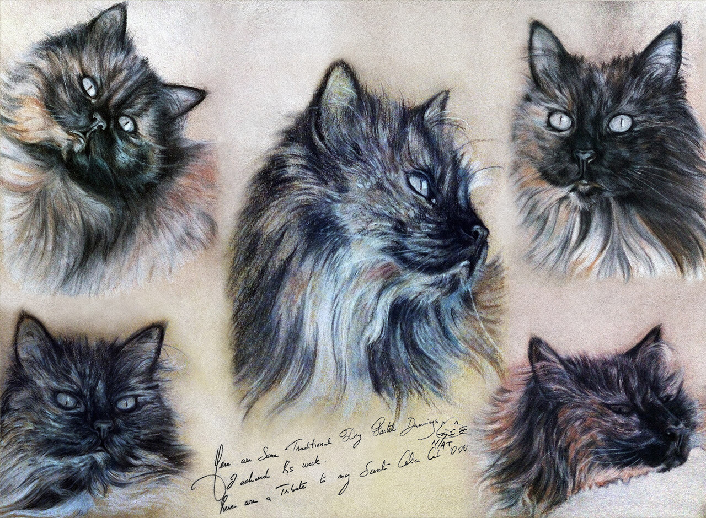
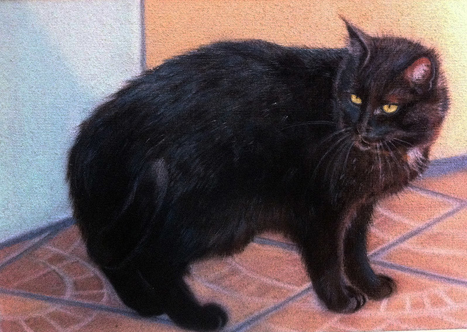
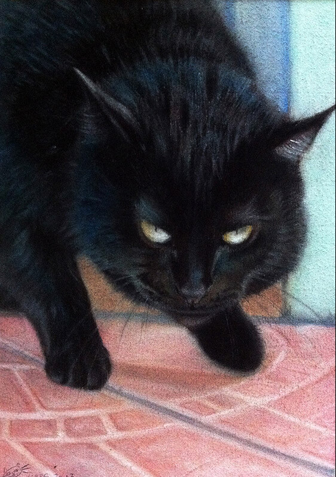
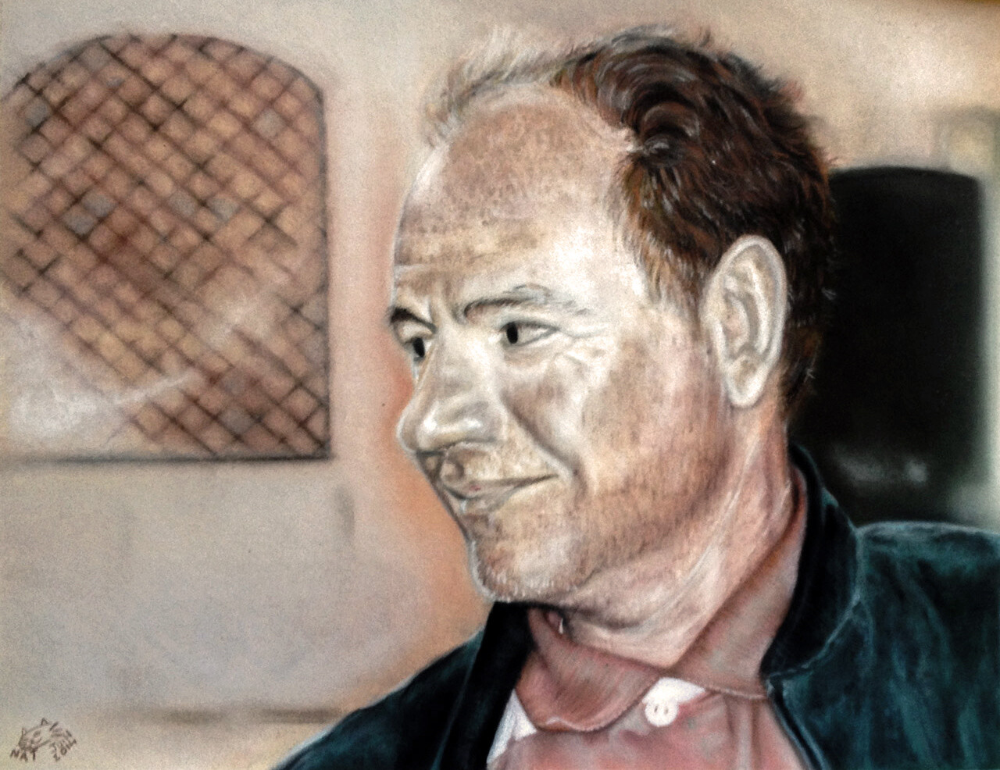
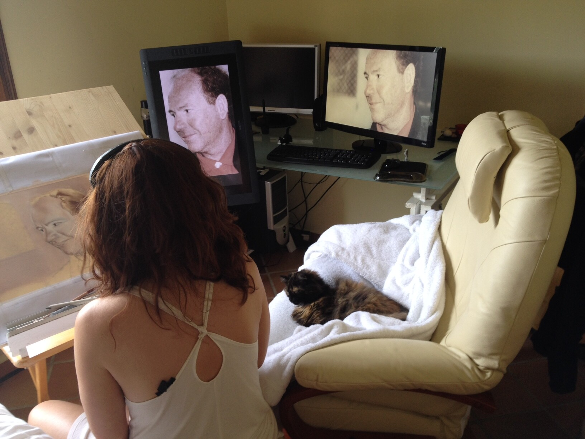
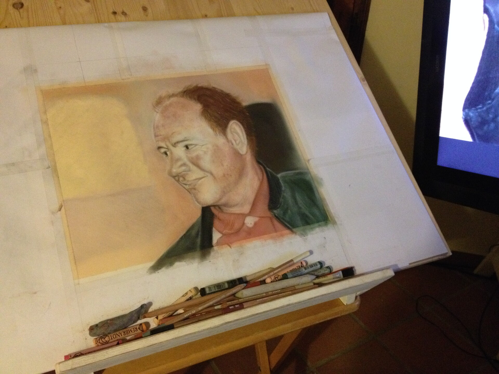
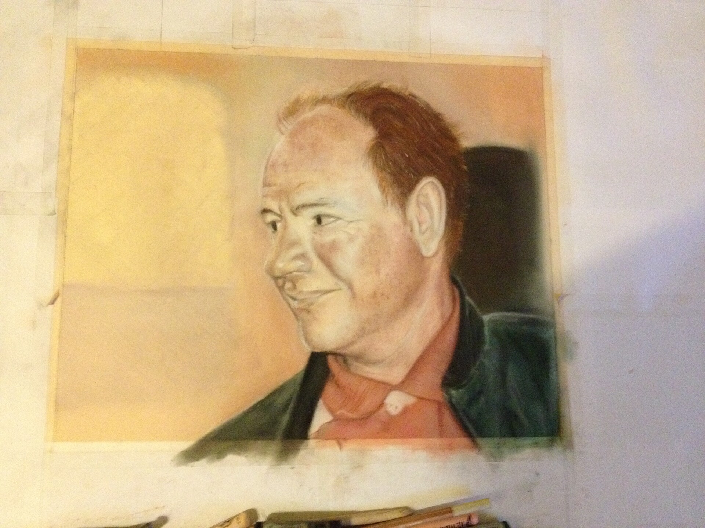
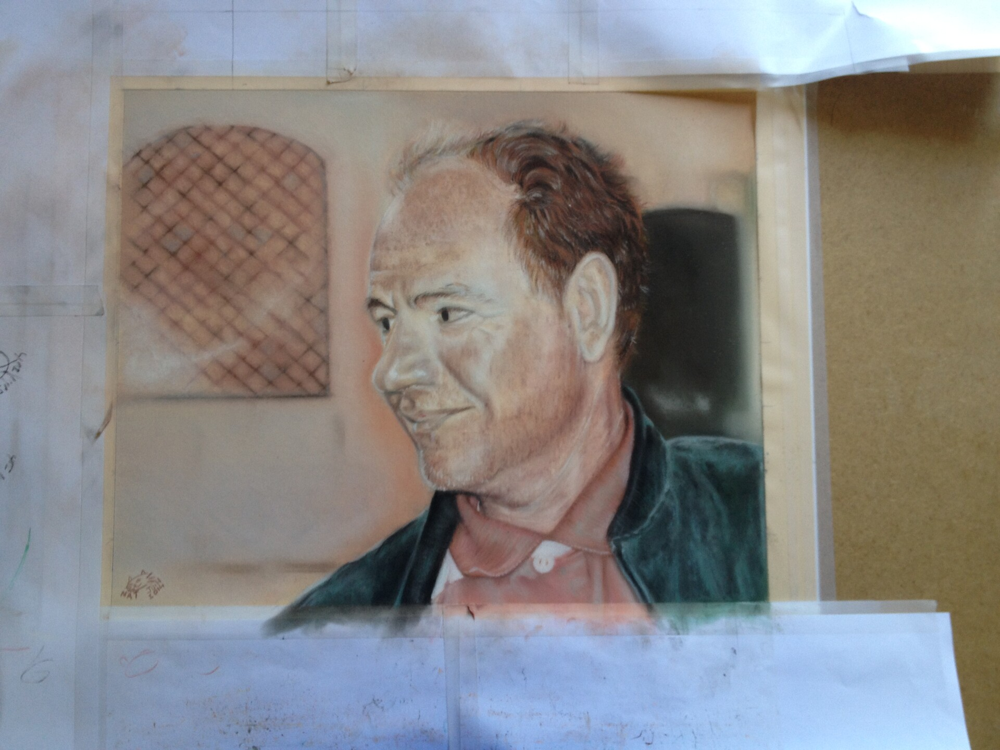
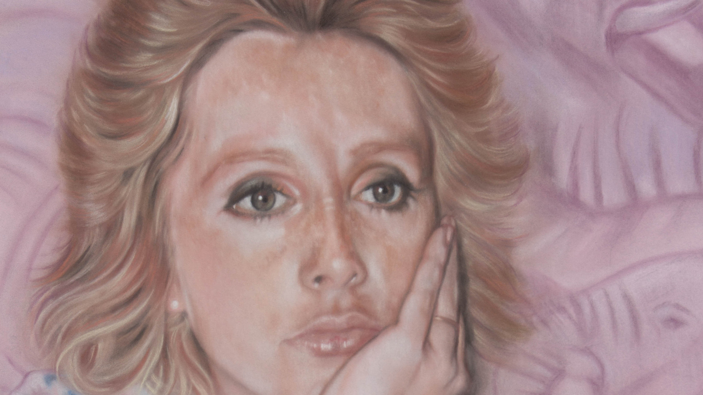

Hand-Drawn Techniques • Portrait Studies • Observational Drawing


Cat Portraits
Here are traditional cat portraits created with soft pastels. My main focus was on rendering fur and accurately interpreting color; because a black cat is never just black. Its fur contains subtle variations of greens, blues, browns, and other tones which, combined with precise values, contribute to a more realistic and rich result. The first drawing was done in sanguine pencil and charcoal while observing my own cat, as an exercise in capturing feline expressions. These works were created both as commissioned pieces and personal gifts. As a cat lover, I find cats endlessly fascinating to observe; from an artistic perspective, they are exceptionally inspiring subjects.
Traditional Portrait Art
Here are traditional portraits painted with soft pastels. My work focuses on observing human gesture, gaze, and facial expression, with particular attention to values and color relationships to achieve a convincing and expressive rendering.
Since childhood, I have closely observed my surroundings and the people around me, gradually building a strong visual memory and an instinctive need to draw. I began with traditional media long before moving deeper into digital art. I still practice traditional drawing regularly, both for personal enjoyment and continuous training. For me, digital tools are simply another set of instruments, offering flexibility to meet industry needs. Traditional or digital... it is always drawing.





